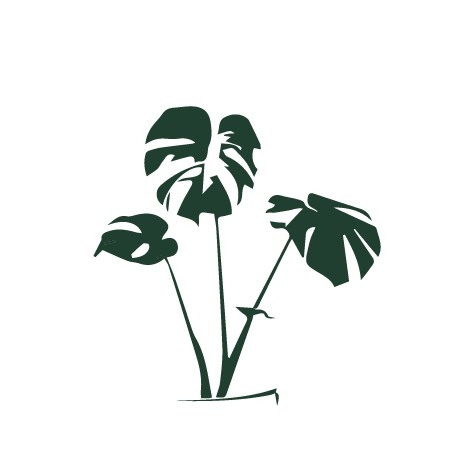
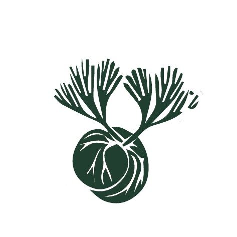
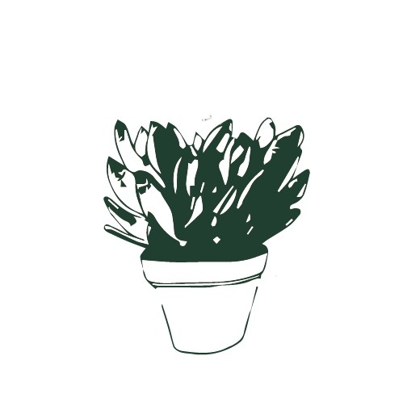

植療室 Blog

觀葉植物

鹿角蕨

多肉植物
植療室 Blog
觀葉植物
鹿角蕨
多肉植物
居家蕨類種植方式
盆栽
新手入門的好選擇，最簡單方便的種植方式，濕度、日照控制恰當，就能良好生長。
優點：小巧輕便可作為居家植栽擺設。
缺點：容易會有土壤蟲害的問題。
more
四種居家常見蕨類
鹿角蕨、鐵線蕨、山蘇、兔腳蕨
鹿角蕨
鹿角蕨是外型類似鹿角，最近年來的熱門居家裝飾選擇，比起其他蕨類，對於濕度更
不要求，比起一般植物更好照顧。
more
植物擺客廳，帶來好財氣
玄關是進入家宅後的第一個位置，除了可阻隔由外界流向室內的氣流外，也是為正
式進入家宅前所做的緩衝。 因此玄關以常綠的觀賞型植物為主，如黃金葛、發財
樹、鐵樹等，且必須謹記時時澆水打理，絕不可讓玄關的植物生灰塵、枯黃枯萎。
more
適合放在卧室的植物
你喜歡植物嗎？你喜歡在閒暇之餘看看植物，對著植物發發呆嗎？就像是在大自然
裡我們可以排除雜念，放鬆身心一樣，植物就好像是大自然在城市裡的一扇扇窗，
讓我們在忙碌之餘還能透口氣，回到大自然的懷抱。特別是在家裡，植物能為家中
帶來新鮮的生命力，或者是將盆栽放在臥室中，能夠為你帶來綠意盎然的每一天，
讓你的房間成為一個寧靜和休憩的最佳空間。
more
苔球－桌上的植物星球
苔球是從日本江戶時代就有的一種植物種植形式，是由日式盆景藝術演變而來的古
老藝術，苔玉盆景的特色主是雕刻形狀不用硬性的材料，而是僅用植物的根部以土
壤包覆，在以青苔包覆其外，也可以稱之為一種軟雕塑藝術。
more
與苔球一起生活是件舒服又容易的事！
想用植物裝飾室內空間，根本不用花大錢，以現有空間為主體，就可以製作大大小
小，不同尺寸的苔球，即使空間狹小，也能找到自己喜歡的植物，打造綠色的紓壓角落！
more